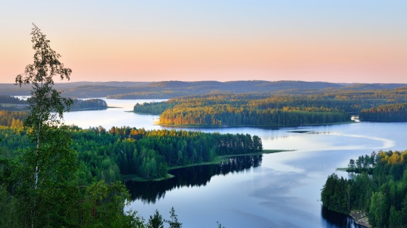
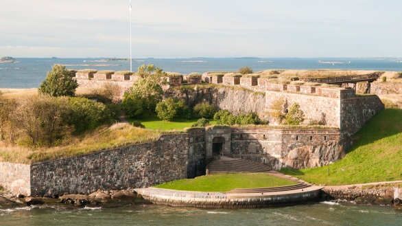
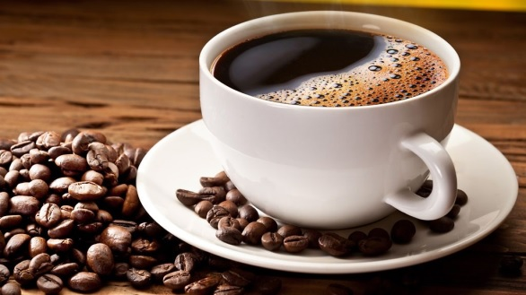

Tilastoa ja nippelitietoa
Tälle sivustolle olen kerännyt nippelitietoa suomesta.
Tuhansien järvien maa
- Suomessä järviä on lähemmäs 190 00. Suomen suurin järvi on Saimaa jonka pinta ala on 4 370 neliökilometriä
Unescon kohteet
- Suomenlinnan lisäksi (alla) suomessa on 6 muuta Unescon maailman perintökohdetta
Suomalaiset kahvin juojat
- Suomalaiset on kahvin juonnissa ja kulutuksessa kärkimaita. Suomalainen juo keskimäärin kolme kupillista päivässä
